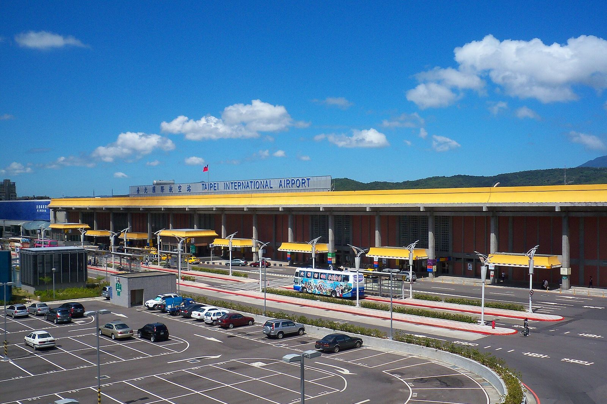

송산공항 e-Gate 등록, 입국 전에 뭘 준비할까?
한국인 등록 조건부터 송산공항 카운터 위치, 입국신고서(TWAC)와 여권 갱신 후 재등록까지 — 줄 서기 전에 챙길 것만 골랐습니다.
게시 · 수정
“송산공항에서 e-Gate 등록하려면 뭘 미리 해야 할까요?” 대만 이민서는 한국을 자동출입국 상호 이용국으로 두고 있고, 한국 전자여권 소지자는 인공 등록 후 e-Gate를 쓸 수 있어요. 이민서·한국 출입국·외국인정책본부의 안내를 바탕으로 2026년 10월 기준으로 정리해봤어요.
01 · 송산공항 e-Gate, 한눈에 비교하기
| 항목 | 내용 | 비고 |
|---|---|---|
| 대상 국가 | 한국 포함 8개 상호 이용국 | 미국은 Global Entry 회원만 |
| 한국인 조건 | 전자여권·만 17세·키 140cm 이상 | 여권 유효기간 6개월 이상(한국 출입국 안내) |
| 등록 방식 | 인공 등록(얼굴+양손 지문) | 상호 이용국은 게이트 자가등록 대상 아님 |
| 등록 소요 | 약 1분(공식) | 대기 줄은 별도 |
| 입국 전 필수 | 온라인 입국신고서(入國登記表) | 거류증 없는 여행객 |
대만 이민서(2026년 9월 23일 갱신)는 미국(Global Entry 회원만)·한국·호주·이탈리아·독일·싱가포르·말레이시아·뉴질랜드를 상호 이용국으로 적어요. 출국할 때는 거류 여부와 관계없이 외국인이 e-Gate를 쓸 수 있습니다. 상호 이용국 여행객은 입국·출국 모두 쓰기 전에 인공 등록 카운터에서 여권을 보여 주고 얼굴과 양손 지문을 등록해야 해요.
02 · 송산공항 e-Gate 등록 장소와 시간
입국 심사대(제한구역 안) 항공편 시간에 맞춰 상시 접수해요. 송산으로 들어와 바로 등록할 때 쓰는 곳입니다.
출국 심사대(제한구역 안) 국제선 출국 시간에 맞춰 접수해요. 출국 전에 등록을 마치면 다음 입국부터 e-Gate를 노려볼 수 있어요.
제1터미널 1층 출국 로비 7-11 옆 제한구역 밖이라 시내에서 들를 수 있어요. 매일 07:00~18:00, 문의 ☎02-2547-5547·02-2547-4161(2026년 8월 공지, 2026년 10월 확인).
다른 공항도 가능 타오위안 1·2터미널, 타이중·가오슝 공항에도 인공 등록 카운터가 있어요. 시간대가 공항마다 다르니 출발 전에 이민서 '申辦地點' 페이지를 확인하세요.

03 · 입국 전 준비: TWAC와 여권
온라인 입국신고서(TWAC) 거류증이 없으면 입국 전에 入國登記表를 작성해야 입국 때 e-Gate를 쓸 수 있어요. 작성을 안 했거나 전송이 끝나지 않으면 일반 심사대로 가야 합니다.
전자여권·유효기간 한국 출입국·외국인정책본부 안내 기준(2026년 10월 확인)으로 전자여권, 만 17세 이상, 키 140cm 이상, 여권 유효기간 6개월 이상이 필요해요.
거류 비자 입국은 예외 상호 이용국 여행객이 거류 비자로 입국할 때는 e-Gate를 쓸 수 없어요. 관광·단기 입국과 목적이 다르면 일반 심사대를 이용하세요.
여권 갱신 후엔 재등록 여권을 바꾸면 다시 등록해야 해요. 상호 이용국의 이용 기간은 협정·상호주의에 따르고, 자세한 나라는 egate.immigration.gov.tw에서 확인합니다.
입국신고서 작성 순서와 입력 항목은 대만 입국신고서(TWAC) 작성 가이드에 따로 정리해 두었어요. 심야에 타오위안으로 들어온다면 타오위안공항 심야 도착 교통과 1터미널 무료 샤워실 글도 참고하면 동선이 덜 꼬입니다.
04 · 등록 후 이용, 신세대 e-Gate, One ID
게이트에서 여권 스캔 상호 이용국 여행객은 전자여권을 리더에 올려요. 첫 문이 열리면 안으로 들어가 얼굴 인식이 이뤄지고, 등록 때 지문을 남겼다면 얼굴이 안 맞을 때 지문으로 보조할 수 있어요.
신세대 e-Gate(2025~) 이민서는 2025년부터 1세대 장비를 모두 교체했고, 기존 등록자는 다시 등록하지 않아도 된다고 안내합니다.
One ID는 다른 서비스 2026년 4월 16일 송산공항이 연 얼굴 인식 탑승 서비스 'One ID'는 체크인·수하물·탑승용이고, 이민서 e-Gate와는 별개예요.
안 되면 일반 심사대 생체 인식이 실패하면 두 번째 문이 열리지 않고 이민관이 도와줘요. 서두르기보다 일반 심사대로 안내받는 편이 안전합니다.

“若未持有居留證，入境前請務必先行上網填寫入國登記表，始可於入境時使用e-Gate.” — 거류증이 없으면 입국 전에 온라인 입국신고서를 작성해야 입국 때 e-Gate를 쓸 수 있다는 이민서 안내예요.
타이베이 일정과 공항 동선을 짜는 중이라면 타이베이 맛집 지도와 타이베이 체험·관광지도 함께 보면 좋아요. 송산에서 시내로 들어온 뒤에는 야시장·카페 핀을 미리 찜해 두는 편이 편합니다.
지도에서 송산·중산 근처 식당도 확인해보세요
등록과 입국을 마친 뒤 시내에서 첫 끼를 고를 때, 미리 찜해 둔 핀이 있으면 동선이 단순해져요.